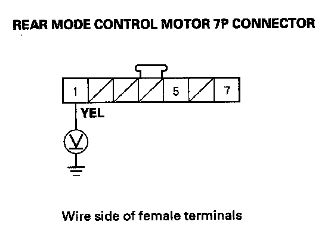
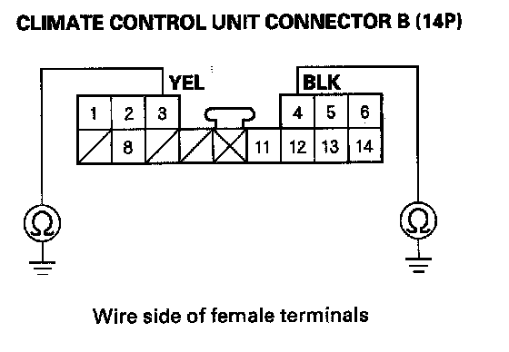
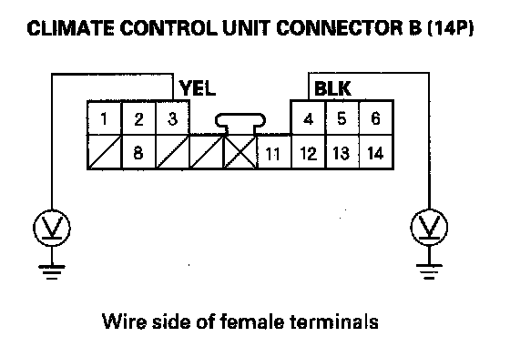
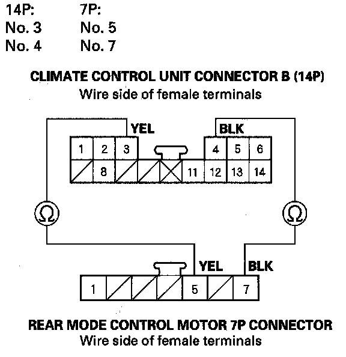

Rear Mode Control Motor Circuit Troubleshooting
Rear Mode Control Motor Circuit Troubleshooting1. Check the No. 30 (10 A) fuse in the under-dash fuse/relay box.
Is the fuse OK?
YES - Go to step 2.
NO - Replace the fuse, and recheck. If the fuse blows again, check for a short in the No. 30 (10 A) fuse circuit.
2. Disconnect the rear mode control motor 7P connector.
3. Turn the ignition switch ON (II).

4. Measure the voltage between the rear mode control motor 7P connector No. 1 and body ground.
Is there battery voltage?
YES - Go to step 5.
NO - Repair open in the wire between the No. 30 (10 A) fuse in the under-dash fuse/relay box and the rear mode control motor.
5. Turn the ignition switch OFF.
6. Test the rear mode control motor.
Is the rear mode control motor OK?
YES - Go to step 7.
NO - Replace the rear mode control motor, or repair the rear mode control linkage or door.
7. Disconnect climate control unit connector B (14P).

8. Check for continuity between body ground and climate control unit connector B (14P) terminals No. 3 and No. 4 individually.
Is there continuity?
YES - Repair short to body ground in the wire(s) between the climate control unit and the rear mode control motor.
NO - Go to step 9.

9. Turn the ignition switch ON (II), and check the same wires for voltage to body ground.
Is there any voltage?
YES - Repair short to power in the wire(s) between the climate control unit and the rear mode control motor. This short may also damage the climate control unit. Repair the short to power before replacing the climate control unit.
NO - Go to step 10.
10. Turn the ignition switch OFF.

11. Check for continuity between the following terminals of climate control unit connector B (14P) and the rear mode control motor 7P connector.
Is there continuity?
YES - Check for loose wires or poor connections at climate control unit connector B (14P) and at the rear mode control motor 7P connector. If the connections are good, substitute a known-good climate control unit, and recheck. If the symptom/indication goes away, replace the original climate control unit.
NO - Repair open in the wire(s) between the climate control unit and the rear mode control motor.